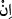
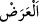
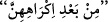
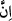

kalmak isterlerse” buyrulmasının yâni “__WORD__” edâtı yerine şart edâtı olan “__WORD__”in
kullanılmasının mânâsı şudur: Namuslu kalma istekleri şüpheli olsa bile câriyelerinizi
fuhşa zorlamamanız gerekirken nasıl olur da kesin olarak namuslu kalmak istediklerinde
onları buna zorlayabilirsiniz?
“__WORD__ kalıcılığı olmayan şey demektir. Bu mânâdan hareketle kelamcılar renk ve tat
gibi cevherle birlikte bulunup kalıcılığı olmayan şeylere ‘araz’ demişlerdir. Kalıcı değil
geçici olduğuna dikkat çekmek üzere “Dünya hazırda bulunan arazdır” denilmiştir.
Âyetin mânâsı şöyledir: Câriyelerinizin gayr-i meşru kazancından ve çocuklarını
satmaktan elde edeceğiniz geçici bir miktar dünyalık için onları fuhşa zorlamaktan
vazgeçin.
Kâşifî der ki: “Tibyân’da şöyle rivâyet olunur: Zinâ eden birisi, zinâ sonucu doğan
çocuğu için zinâ ettiği kadına yüz deve verirdi.”
“Kim onları zor altında bırakırsa,” fuhşa zorlarsa “bilinmelidir ki
zorlanmalarından sonra Allah” onlar için “çok bağışlayıcı ve merhametlidir.”
__WORD__ ifâdesinin “__WORD__”nin ismi ile haberi arasında zikredilmesi, mağfiret ve
rahmetin sebebinin o olduğunu bildirmek içindir. Burada câriyeleri fuhşa zorlayanların
rahmet ve mağfiretten tamamen mahrûm olduklarına işâret vardır. Mağfiret, önceden
işlenmiş günahlar için söz konusudur. Câriyelerin mağfirete ihtiyaç duymaları, her ne
kadar zoraki yapsalar da zinâ esnasında beşerî yaratılış icabı kısmen de olsa rızâ
gösterme ihtimâlinden uzak kalamama îtibariyledir.
el-Kevâşî’de der ki: Burada mağfiret, günahın yokluğu mânâsındadır. Çünkü ölümle
veya bir uzvunun telefi ile tehdid edilerek zinâya zorlanan câriyelerin günahı yoktur.
Erkeğin ise yapmaya zorlansa bile zinâ etmesi helâl değildir. Çünkü zinâ fiili ancak
onun tarafından ve onun bu fiile azmetmesiyle olur. Haksız yere adam öldürmek de
bunun gibidir. Zor altında kalmış bulunmak hiçbir şekilde onu mübah kılamaz.”
Bu iki âyet-i kerîmede iki işâret vardır: Birincisi: Allah’ı talebde yüksek himmet
sâhibi zatların mertebesine ulaşamamış fakat nefs-i emmârelerine mâlik olan bâzı sâlih
kimseler tevbe ve sâlih ameller ile nefislerini Allah’ın azâbından ve ateş
boyunduruğundan mükâtebe yoluyla kurtarmak isterler. Siz onlarla hemen mükâtebe
yapın. Yâni eğer onlarda doğruluk alâmetleri ve Allah’a verdikleri sözü yerine
getirecek bir vefâ görürseniz onlara tevbe ettirin. Çünkü telkin, isteyen herkese değil
sadece vefâ ehline yapılmalıdır. Vefâ ehli ise Allah’ın yakîn ehline bahşettiği kuvvetli
bir ferasetle bilinir. Onlara, Allah’ın size vermiş olduğu dinde nasihat ve velâyet
kuvvetinden verin. Çünkü her şeyin bir zekâtı vardır. Velâyetin zekâtı ise ilim, mârifet,
nasihat isteyenlere nasihat, tâlibleri irşâd, takvâ ve iyilik üzere yardımlaşma ve
müttakîlere yumuşak davranmaktır. Zekâtı verilmeyen mallar eksildiği ve mahvolup
gittiği gibi irşâd edilmek isteyen dervişleri kapıdan çevirmekle de mânevî hâller
kaybolur. Zâhirdeki sultanlık ancak halkın maslahâtını temin ve müslümanlara yardım